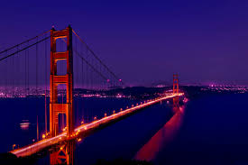
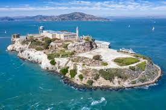
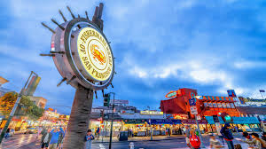
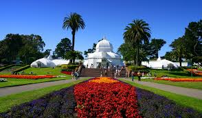
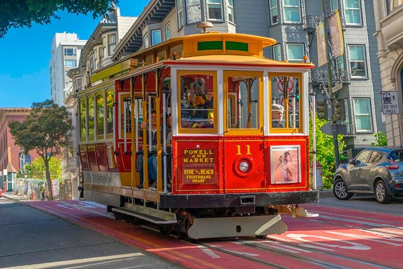

A vibrant metropolis in California.
San Francisco, officially the City and County of San Francisco, is a commercial, financial, and cultural center of Northern California. With a population of 827,526 residents as of 2024, San Francisco is the fourth-most populous city in the U.S. state of California and the 17th-most populous in the United States. San Francisco is a vibrant city with diverse views, unique neighborhoods and beautiful outdoor spaces. There is always so much to do in the City by the Bay. San Francisco is famous for its stunning landmarks like the Golden Gate Bridge, Alcatraz and Pier 39, but there are plenty of less-know, but still amazing things to do.
Main Attractions in San Francisco
-
Golden Gate Bridge

The Golden Gate Bridge is a suspension bridge spanning the Golden Gate, the one-mile-wide strait connecting San Francisco Bay and the Pacific Ocean in California, United States. Acclaimed as one of the world's most beautiful bridges, there are many different elements to the Golden Gate Bridge that make it unique. With its tremendous towers, sweeping cables, and great span, the Bridge is a sensory beauty and engineering wonder featuring color, sound and light. At 1.7 miles (2.7 kilometres) in length, the Golden Gate Bridge is one of the longest suspension bridges in the world. Above all, it's the most treasured and representative symbol of the city of San Francisco.
-
Alcatraz Island

Alcatraz Island is a small island about 1.25 miles offshore from San Francisco in San Francisco Bay, California, near the Golden Gate Strait. The island was developed in the mid-19th century with facilities for a lighthouse, a military fortification, and a military prison. Alcatraz is famous primarily for being a notorious maximum-security federal prison that housed some of America's most dangerous criminals from 1934 to 1963. Its reputation as an inescapable prison, coupled with famous inmates like Al Capone and stories of daring escape attempts, has cemented its place in popular culture.
-
Fisherman's Wharf

Fisherman's Wharf is a well-known and popular tourist destination in San Francisco, California, famous for its lively atmosphere, seafood restaurants, and sea lions. It's a historic waterfront neighborhood known for its charm, offering a mix of attractions, shops, and dining options. On the northern waterfront, it is one of the city's busiest tourist areas. Souvenir shops and stalls selling crab and clam chowder in sourdough bread bowls appear at every turn, as do postcard views of the bay, Golden Gate and Alcatraz. There’s also a colony of sea lions to see and historic ships to tour. At Ghirardelli Square, boutiques and eateries reside in the famed former chocolate factory.
-
Golden Gate Park

Golden Gate Park is an urban park between the Richmond and Sunset districts on the West Side of San Francisco, California, United States. It is the largest urban park in the city, containing 1,017 acres, and the third-most visited urban park in the United States, with an estimated 24 million visitors annually. Today, the park is home to some of San Francisco's most-visited attractions, including the Japanese Tea Garden, the San Francisco Botanical Garden, the de Young Museum, and the California Academy of Sciences. It's an absolute must-see and it's advisable to visit the Golden Gate Park if you're a plant lover as the Park has over 5000 species. Plan on spending a few hours there since the park is huge. I would recommend to take the bike rentals with children because it can be really exhausting trying to walk everything on foot.
-
Cable Cars

San Francisco's cable cars are an iconic and historic part of the city's transportation system, operating since 1873. They are a popular tourist attraction, offering rides up and down the city's hilly terrain. The system has three lines: the Powell-Hyde line, the Powell-Mason line, and the California Street line. It's easy to find and board a cable car. Choose from three cable car lines - two start at Powell and Market and continue to the Fisherman's Wharf area; one starts at California and Market and continues to Van Ness Avenue. One way journeys take up to 10 minutes but vary according to passenger flow and weather conditions.